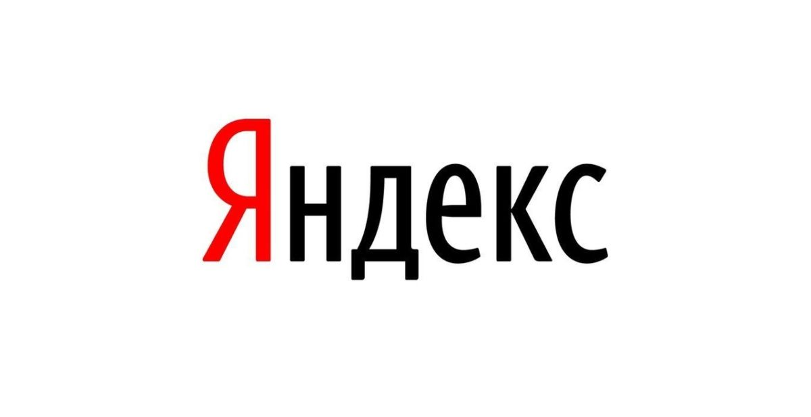
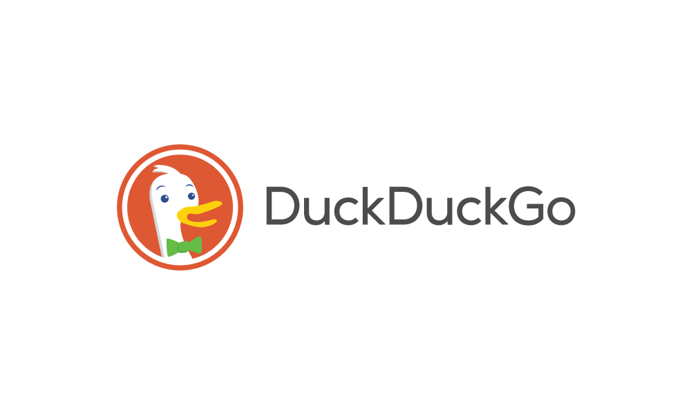
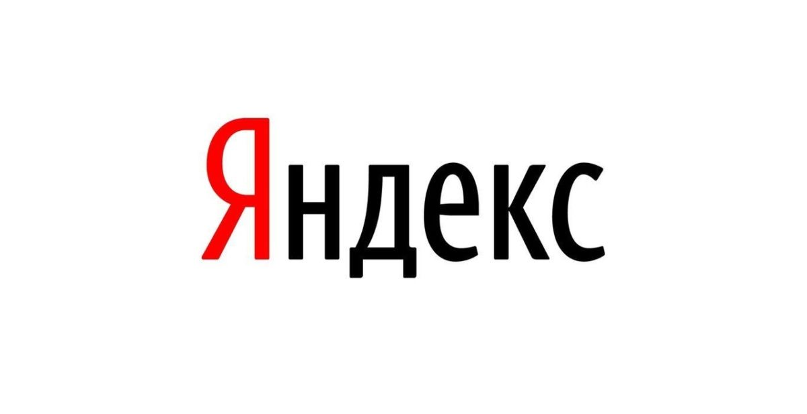
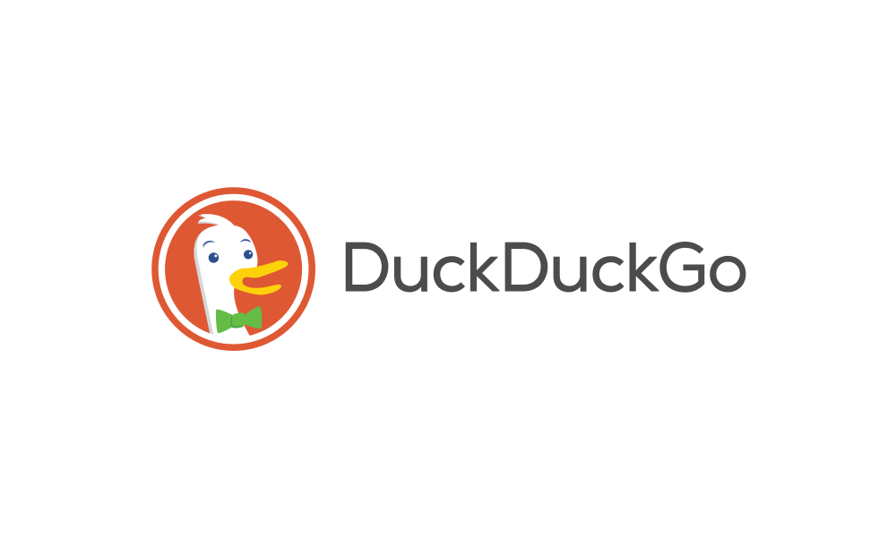

Что такое поисковая система?
Ключевой параметр работы поисковых систем – запрос. Именно в соответсвии с поисковыми запросами поисковики мира выдают пользователям нужную информацию посредством генерации поисковой выдачи.
Чтобы точно отвечать на как можно большее количество запросов пользователей, поисковые боты (например, «Googlebot») выполняют 3 обязательных этапа:
- Сканируют страницы. Следят, какие новые страницы / сайты появляются, и как обновляются старые.
- Индексируют страницы. Распознают содержание страницы и добавляют их в свою огромную базу данных.
- Ранжируют страницы. В зависимости от запроса пользователя, поисковая система генерирует выдачу, произведя отбор лучших результатов из своей базы по определенному алгоритму.
Часто факторы связанные с авторитетом домена, трастом сайта, количеством обратных ссылок имеют большее значение, чем ценность информации для пользователя. Как результат, сайты, которые лучше отвечают на запрос пользователя, но не обладают большим «авторитетом» в глазах поисковой системы, остаются вне внимания пользователя. Удивительно, но одна из самых инновационных компаний в мире делает свои алгоритмы консервативнее. Продвинутые пользователи (как читатели, так и авторы контента) замечают это и их всё больше раздражает монополия Google среди поисковых систем.
Кроме того, многие знают, что Google детально отслеживает каждый шаг пользователя. Кроме понимания, как улучшать свои продукты, это также дает возможность Google создавать лучшие условия для таргетинга в рекламной системе Google Ads. Кто-то из нас не обращает на это внимания. Но все больше растет количество пользователей, которые хотят использовать поисковые системы без рекламных объявлений, или же искать информацию по другим алгоритмам. К счастью, существует множество альтернатив для Google. Каждая из них имеет определенные преимущества и особые сферы применения.
Важно уточнить, что данная статья создана не для того, чтобы занизить значение гугла в глазах активных пользователей всей сети. Её цель, лишь показать большое количество инструментов и вариантов поиска информации, которые сейчас существуют. Google не был первопроходцем на рынке поисковых систем, но он (а именно Сергей Брин и Ларри Пейдж) создал самый совершенный для своего времени алгоритм ранжирования сайтов. И на протяжении всей истории развития рынка поисковых систем, он определял и определяет правила игры на этом рынке.
Bing
Bing является самой популярной поисковой системой после Google (Yahoo был выкуплен компанией Microsoft в 2009 году). Это единственная поисковая система Microsoft, которая была разработана специально для систем Windows.У Bing есть отличные возможности поиска видео, которые даже лучше, чем у Google. Здесь больше параметров автозаполнения, при введении запросов пользователя. Он отслеживает больше взаимосвязей между отдельными веб-сайтами, и благодаря этому поиск в интернете похожих вариантов упрощается.
Yahoo!
Yahoo! — американская компания, владевшая второй по популярности в мире поисковой системой (при этом в США и Канаде в соответствии с соглашением с Майкрософт от 2009 года и по состоянию на 2016 год поиск на сайте Yahoo! осуществляется поисковой машиной Bing) и предоставляющая ряд сервисов, объединённых интернет-порталом Yahoo! Directory; портал включает в себя популярный сервис электронной почты Yahoo! Mail, один из старейших и наиболее популярных в Интернете.3 июня 2017 года была закрыта сделка по продаже Yahoo! компании Verizon Communications.
Yandex
Яндекс – одна из наиболее популярных поисковых систем в России. Обычно пользователи называют Яндекс российским аналогом Google, поскольку у него похожий интерфейс и дополнительные сервисы. Этот сервис известен хорошо продуманным логическим алгоритмом, который распределяет результаты с некоторыми дополнительными функциями. Сейчас, известно, что Яндекс лучше понимает смысл текста. Молодой сайт, который продвигается в СНГ, может достигнуть ТОПа в Яндексе значительно быстрее, чем в поисковой выдаче Google. Но только в том случае, если упор сделан на качество контента и удобство сайта, а не на ссылки.DuckDuckGo
DuckDuckGo – еще один популярный вариант поиска, который предустановлен в некоторых популярных браузерах (например Firefox). Это один из лучших вариантов для тех, кто не хочет, чтобы их данные отслеживались. Обычно DuckDuckGo противопоставляется Google, который похож на «Большого брата» и следит за каждым шагом пользователя.Creative Commons Search
Creative Commons Search или в сокращенном варианте CC Search – уникальная анонимная поисковая система. Она дает возможность получать авторские материалы с правами для повторного использования в личных целях. Если вы планируете создать персональную веб-страницу, CC Search станет отличным местом для сбора дизайнерских материалов.